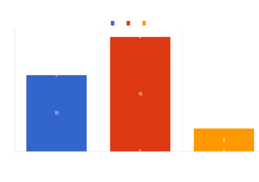

Ricerca avanzata
Risultati
#
Nome
Paese
Campionato
Anno N.
Club
Ruolo
1
Erling Haaland
2
Harry Kane
3
Ivan Toney
4
Mohamed Salah
5
Callum Wilson
6
Marcus Rashford
7
Gabriel Martinelli
8
Martin Odegaard
9
Ollie Watkins
10
Bukayo Saka
11
Aleksander Mitrovic
BUKAYO SAKA
Profilo giocatore
Nazionalità:
Altezza:
Peso:
Età:
Squadra:
Ruolo:
Valore mercato:
Inghilterra
178 cm
65 kg
22 anni
Arsenal
Attaccante
40'000'000
Palmares
Caratteristiche giocatore
Cosa sappiamo:
Considerato uno dei talenti più forti della propria generazione, è un esterno d'attacco, forte fisicamente e abile con entrambi i piedi (anche se mancina naturale) che può essere schierato su tutto il fronte offensivo, anche se predilige il ruolo di ala destra.Utilizzato anche come terzino sinistro, per il suo stile di gioco viene paragonato ad Ainsley Maitland-Niles e Ryan Sessegnon.
Statistiche:
Presenze:
Gol:
Assist:
Passaggi:
Precisione tiri:
Precisione passaggi:
Contrasti:
Contrasti vinti:
Palle contese:
Duelli vinti:
Palle recuperate:
Cross:
Falli commessi:
Cartellini rossi:
Cartellini gialli:
150
5
6
648
65.2%
83.35
35
57.1
225
53.3%
7
41
20
2
0

Approfondimento statistiche
- Partite: 7
- Goal fatti: 12
- Goal concessi: 7
- Assist: 9
- Dribbling: 390
- Tiri in porta: 78
- Tiri totali: 273
- Goal/Tiri: 0.2
- Effettuati: 5460
- Completati: 4512
- Fuorigioco: 127
- Possesso palla medio: 60.6%
- Palloni recuperati: 865
- Parate: 272
- Contrasti: 1112
- Porta inviolata: 7
- Top marcatore: Bukayo Saka
- Top uomo assist: Martin Odegard
- Top difensore: William Saliba
- Top sanzionato: Kai Havertz
- Link web: https://www.arsenal.com/
- Link instagram: blabla/instagram/arsenal
- Link youtube: blabla/youtube/arsenal
- Link PL: https://www.premierleague.com/